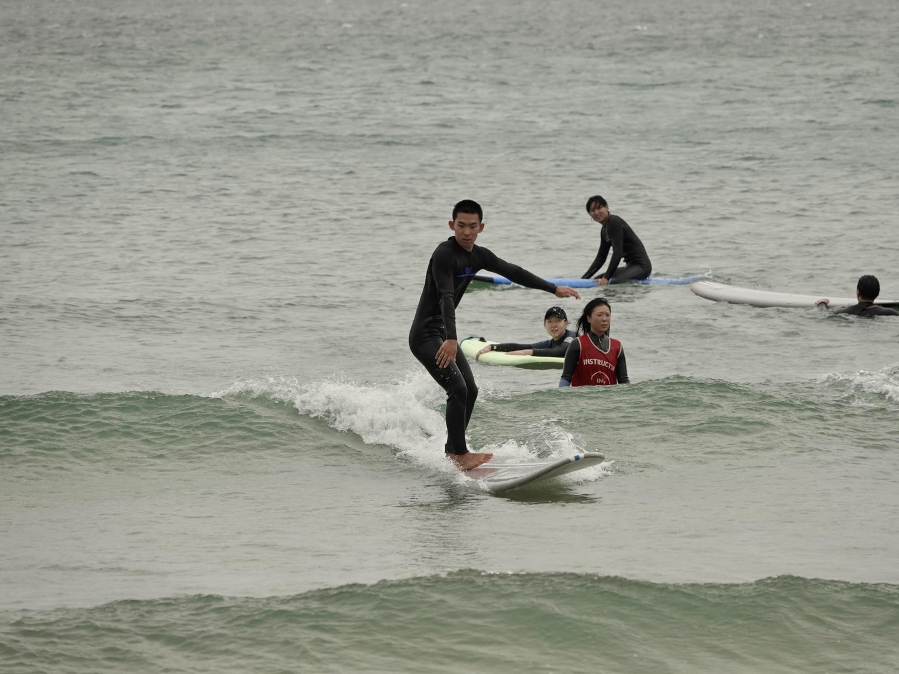

안녕하세요. 저는 이상혁입니다.
아마도 제가 나이가 가장 많을 것으로 예상됩니다.
배움에는 나이가 없다고 생각하기 때문에 열심히 배우겠습니다.
잘 부탁드립니다.
취미는 조금 특이한데 서핑입니다.
서핑 강사로 일한 적도 있습니다.

VSCode나 CLion, IntelliJ 같은 IDE를 사용하고 있습니다.
자동완성이 정말 편리하다고 느끼고 있고,
VSCode는 에디터라 그런지 약간 불편한 점도 있는 것 같습니다.
멘토님을 첫 스터디가 끝난 날, 서브웨이에서 우연히 뵈었습니다.
인사를 드렸고, 사실 저녁을 같이 먹고 싶었지만
급하게 제출해야 할 과제가 있어 허겁지겁 나왔습니다.
혹시 다음 주에 시간이 되신다면 저녁을 같이 먹고 싶습니다.
요즘 자바를 공부하고 있습니다.
자바에 대해 더 알고 싶다면 아래 링크를 참고해주세요.
언어 소개 페이지
사실 저는 게임 개발에 관심이 있어서 다른 언어도 공부했었습니다.
유니티도 다뤄봤지만, 현실적인 방향을 고려하여 자바를 공부하고 있습니다.